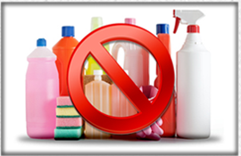
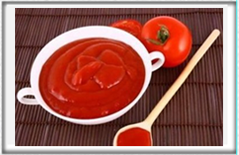
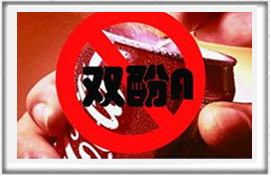

首页
关于我们
我们的简介
我们的承诺
我们的优势
友情提示
产品展示
冰淇淋
经典原味司康，松软酥脆，甘甜适口。创新融入龙眼花蜜，散发芬芳气息，再缀以清甜饱满的提子干，香甜滋味恰到好处。搭配一杯星巴克的浓缩咖啡，香甜之余感受回味无穷。
蛋糕装饰
多用配件
烘 焙
酒店备餐
巧克力
主厨教室
最新活动
会员招募
会员简介
加入我们
使用洗碗机清洗模具时，一般建议不使用强力型洗涤剂、抛光剂或者除臭剂等。 使用漂洗剂洗涤时，模具表面可能会因此出现一些可见白斑，假如随后用此模具 进行烘焙，就有可能出现因漂洗剂导致食物味道改变的现象。但这绝对不影响模 具的性能和安全性。但凡遇到这类情况，我们的建议是将模具放在开水中煮几分 钟时间即可。

某些特殊成分，例如可可脂或番茄酱等，使用后可能会在模具表面留下一些白色 或彩色斑点：这种现象十分正常，并不会影响产品正常性能和安全性。为了避免 这种现象发生，我们的建议同样是将模具放在开水中煮几分钟即可。

双酚-A(简称BPA)是一种用于环氧树脂和绝大多数聚碳酸酯生产中的单分子物质。 最新研究结果显示：如果使用含BPA物质的材料频率过于频繁，可能会对人体健 康产生有害影响。我们生产的硅树脂并非由塑料中提取，因此绝对不含这种物质。

家庭专用
我们的优势
意大利制造